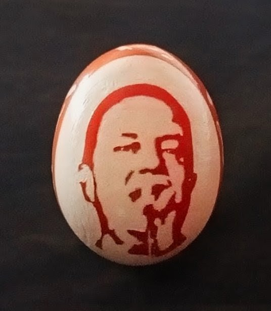
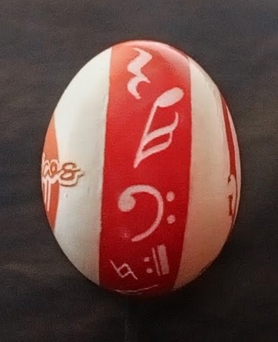
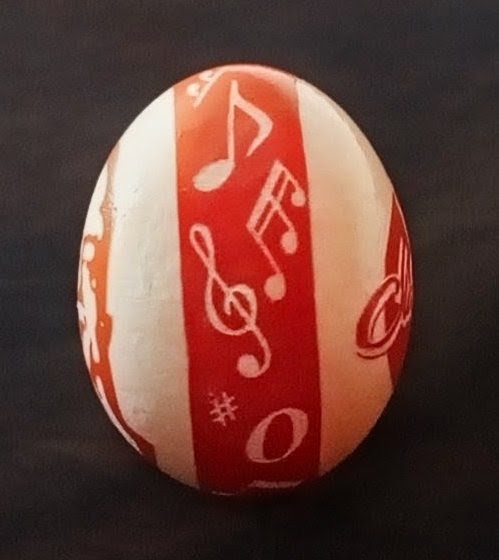
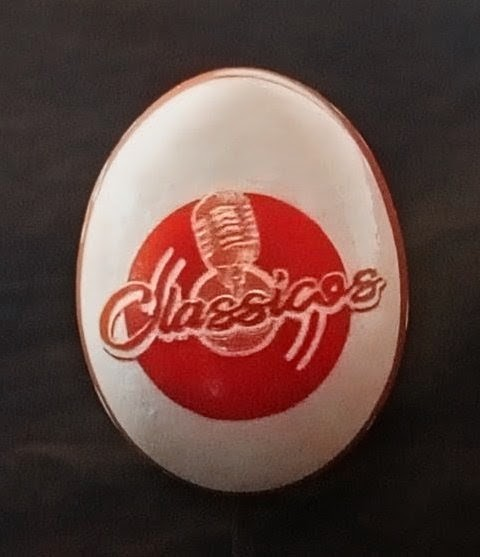

ENTRE SILENCIOS Y NOTAS
Idea para conmemorar los 40 años de trayectoria de Rodrigo.
Rodrigo Hernán Valderrama · Classicos
Esta creación fue realizada por encargo para conmemorar la trayectoria artística de Rodrigo Hernán Valderrama, músico y fundador de Classicos.
La obra fue concebida como un homenaje a su recorrido artístico, evitando incorporar fechas de manera explícita dentro del diseño. En su lugar, la trayectoria se expresa mediante el retrato de Rodrigo, el lenguaje de los signos musicales y la identidad de Classicos.
El resultado reúne persona, música e identidad artística sobre la delicada superficie del cascarón de huevo.
Una vida entre notas
Esta obra fue concebida como una representación visual de la trayectoria artística y vital de Rodrigo Hernán Valderrama.
El rostro de Rodrigo ocupa la parte frontal del cascarón y constituye el punto de partida de la obra: la persona detrás de una historia construida a lo largo de cuatro décadas de vida artística.
A ambos lados aparecen diferentes signos musicales. Sin embargo, estos no están organizados sobre un pentagrama ni siguen una composición musical convencional. Su aparente desorden es intencional.
Cada signo representa un momento, un acontecimiento o una circunstancia dentro de la vida de Rodrigo: momentos que sobresalen, experiencias que dejan huella, instantes de pausa y períodos de silencio o interrupción que, como ocurre en la vida de cualquier persona, también forman parte de una trayectoria.
Las notas dispersas simbolizan así una vida que no ha seguido siempre una melodía continua. En ellas están representados los momentos de alegría y realización, pero también las frustraciones, las dificultades y el sufrimiento que pueden aparecer en el camino.
Pero entre todos esos momentos existe un elemento que termina dando sentido al conjunto: la música.
La música aparece no solamente como la profesión de Rodrigo, sino como una fuerza de reorientación y rescate. Después de los silencios, las interrupciones y las dificultades, fue también la música la que contribuyó a devolver dirección y sentido a su camino.
Por eso los signos musicales no están contenidos dentro de un pentagrama. No representan una canción específica: representan una vida. Una vida compuesta por momentos diferentes, algunos armónicos y otros difíciles de ordenar, pero que finalmente encuentran en la música un lenguaje capaz de volver a unirlos.
En el espaldar, el logotipo de Classicos, acompañado por el micrófono, completa ese recorrido. La identidad personal del frente encuentra su expresión profesional en la parte posterior, cerrando simbólicamente el círculo entre el hombre, su historia y la música.
La obra, entonces, no pretende simplemente conmemorar cuarenta años de trayectoria artística. Busca representar el camino que hubo detrás de esos cuarenta años.
La obra en detalle

VISTA FRONTAL

COSTADO IZQUIERDO

COSTADO DERECHO

VISTA POSTERIOR
La obra en movimiento
Obra: Entre silencios y notas
Homenajeado: Rodrigo Hernán Valderrama
Proyecto musical: Classicos
Tipo: Obra realizada por encargo
Soporte: Cascarón de huevo de gallina